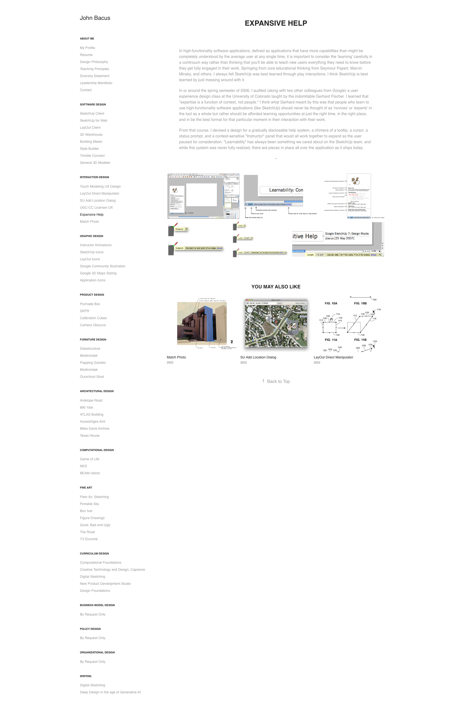

Expansive Help
In high-functionality software applications, defined as applications that have more capabilities than might be completely understood by the average user at any single time, it is important to consider the 'learning' carefully in a continuum way rather than thinking that you'll be able to teach new users everything they need to know before they get fully engaged in their work. Springing from core educational thinking from Seymour Papert, Marvin Minsky, and others, I always felt SketchUp was best learned through play interactions. I think SketchUp is best learned by just messing around with it.
In or around the spring semester of 2006, I audited (along with two other colleagues from Google) a user experience design class at the University of Colorado taught by the indomitable Gerhard Fischer. I learned that "expertise is a function of context, not people." I think what Gerhard meant by this was that people who learn to use high-functionality software applications (like SketchUp) should never be thought of as 'novices' or 'experts' in the tool as a whole but rather should be afforded learning opportunities at just the right time, in the right place, and in be the best format for that particular moment in their interaction with their work.
From that course, I devised a design for a gradually disclosable help system, a chimera of a tooltip, a cursor, a status prompt, and a context-sensitive "Instructor" panel that would all work together to expand as the user paused for consideration. "Learnability" has always been something we cared about on the SketchUp team, and while this system was never fully realized, there are pieces in place all over the application as it ships today.